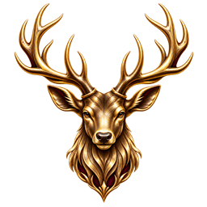
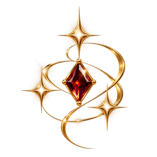
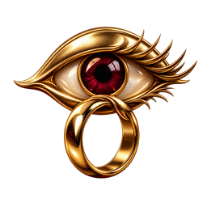

Välkommen till fundamentet för The Vixen Dare. Detta är inte bara ett verktyg, det är en vägledning genom en medveten eskalering av er gemensamma dynamik.
"
Förord
The Vixen / Hotwife Dare är inte för alla. Det är för er som vågar leka med gränser, för er som vill blanda lust, risk och förbjudna fantasier.
Korten är till för att försöka hjälpa till med vägledande steg för steg utmaningar djupare in i denna värld, från flirtiga antydningar till utlämnande stunder där kontrollen helt lämnas över.
Allt handlar om att utforska, att våga, och att göra det tillsammans. Det här är er resa, njut av varje kort.
Introduktion
Detta verktyg är inte skapat för slumpmässig underhållning; det är ett instrument för en medveten eskalering. Syftet är att metodiskt bygga upp en dynamik och livsstil som under normala omständigheter kan ta år att etablera.
Genom att följa ramverket låter ni dynamiken mogna fram organiskt men med en tydlig riktning. Det är en resa där det är bäst att skynda långsamt, eftersom progressionen är djupt personlig. Vissa når de högsta nivåerna på några månader, medan det för andra tar år – eller så landar man på en nivå där man trivs och stannar där.
Resans eskalering
Fundamentet (Nivå 1-2)
Här läggs grunden. Det handlar om de subtila signalerna, att väcka en nyfikenhet som legat vilande och att så fröna till det som komma skall. En lekfull fas med en underton av vad som väntar.
Formningen (Nivå 3-4)
Intensiteten ökar. Gränser testas och rollerna blir tydligare. Det är här formningen av er gemensamma resa tar fart på allvar. Insatserna höjs och valen blir mer avgörande.
Livsstilen (Nivå 5)
Här existerar inga filter. De fullskaliga scenarierna tar plats och fantasierna transformeras till konkret handling. Varje nivå har fungerat som en förberedelse för att ni ska kunna äga den här världen fullt ut.
Funktionen är enkel: Dra nya kort när ni gemensamt har beslutat att ni är redo för nästa steg. Korten ger vägledningen, men det är i ert agerande som den faktiska förändringen sker.
Välj kvällens miljö
Varje gång ni öppnar spelet väljer ni först var ni befinner er under "Var är du ikväll?" – på stan, i en bar eller pub, på ett uteställe, på en privat fest, hemma med inbjudna gäster eller på en swingersklubb. När ni trycker på en nivåknapp får ni upp till fem slumpade kort som passar den valda miljön.
Trycker ni igen ersätts de aktiva korten av en ny slumpad omgång. Ett kort kan dyka upp igen senare, eftersom det kanske passar bättre vid ett annat tillfälle.
Vem är hon?
Särskiljandet av rollerna och energin i dynamiken. Här går vi igenom vad som karaktäriserar de olika vägarna.
Stag & Vixen
Grundstruktur:
Ett par där hon (Vixen) har sex med andra män.

Han (Stag) är medveten, stolt och ofta närvarande.

Fokus på att hon är åtrådd och att han “visar upp” henne.
Kännetecken
Viktiga nyanser:
• Ingen förnedring av mannen, ingen underkastelse.
• Stag är trygg, självsäker och ofta aktiv.
• Dynamiken är ofta exhibitionistisk och inkluderande.
Centralt tema: Stolthet
Stag känner stolthet över sin partner. Han upplever upphetsning genom att hon är begärd av andra. I många fall tittar han på, deltar, eller är samtidigt med andra kvinnor. Allt sker öppet, lekfullt och med ömsesidigt driv. Mer en power couple-energi än en förnedringsfantasi.
Klassisk Hotwife
Struktur:
Hon har sex med andra män, han får upphetsning av det.
Ofta en tydligare ensidig struktur.

Han är inte alltid sexuellt aktiv med andra själv.
Variationer
Kan vara:
• Cuckold-inspirerad (maktförskjutning).
• Exhibitionistisk eller öppen relation.
• Hennes njutning står i det absoluta centrumet.
Community-tolkningar
Många använder idag hotwife och vixen synonymt, men historiskt finns skillnader. Hotwife innebär ofta att "hon får, han tittar eller accepterar", medan Stag/Vixen markerar en jämnare maktbalans där båda ofta är aktiva.
Aspekt
Stag & Vixen
Hotwife
Hans roll
Aktiv, stolt, självsäker
Ofta passiv eller sekundär
Maktbalans
Jämn och kraftfull
Kan vara ojämn
Exhibitionism
Ofta centralt
Ibland
Ton
Livsstil / Lekfull sexualitet
Kan vara kink / fetisch
📌 Viktig nyans
I modern användning bland swingers använder många begreppen synonymt. Stag & Vixen används dock specifikt för att markera att mannen inte är undergiven, medan Cuckold är en separat dynamik med en helt annan maktstruktur.
Nivåernas Anatomi
Analysera nivåernas profil. Klicka på nivåerna för att se hur balansen mellan risk, exponering och intensitet skiftar.
Integritet & Kontroll
Här lär du dig hur du skyddar din resa och installerar verktyget för bästa upplevelse.
🔒
Total Diskretion
Dina framsteg lagras lokalt i webbläsaren och skickas inte till någon server. Du kan dessutom välja en automatisk backupfil i The Vault. Om du rensar webbplatsdata eller byter enhet följer den lokala historiken inte med – då återställer du från backupfilen eller en Vixen Key.
⚠️ VIKTIGT: En statisk ögonblicksbild
En Vixen Key är en statisk ögonblicksbild av din historik. Den uppdateras inte automatiskt. För löpande backup kan du i stället välja en automatisk backupfil i The Vault.
📱 Installera som App
För att få den rätta känslan och slippa webbadress-fältet, spara ner verktyget på din hemskärm:
iPhone (iOS)
Tryck på 'Dela' (fyrkant med pil) och välj sedan "Lägg till på hemskärmen".
Android
Tryck på de tre prickarna (Meny) och välj "Installera app" eller "Lägg till på startskärmen".
Spara dina framsteg & backup
Spelet sparar automatiskt dina framsteg i den webbläsare du använder. Du behöver inte trycka på någon sparknapp när du har klarat ett uppdrag. En backup är en extra kopia som du sparar separat för att kunna återställa framstegen om du byter enhet eller rensar webbplatsdata.
Vixen Key – en kopia du sparar själv
1. Öppna The Vault längst ner i spelet och tryck på Skapa backup-nyckel. 2. Tryck på Kopiera nyckel. 3. Klistra in hela koden i exempelvis en sparad anteckning eller lösenordshanterare.
Nyckeln innehåller framstegen från det ögonblick du skapade den. Den uppdateras inte automatiskt. Skapa och spara därför en ny efter en spelkväll. Att bara visa eller kopiera koden räcker inte – du behöver också spara den någonstans där du hittar den igen.
Automatisk backupfil – samma fil uppdateras
1. Tryck på Välj automatisk backupfil i The Vault. 2. Välj en mapp och spara filen vixen-dare-backup.json. 3. Kontrollera bekräftelsen under knappen. Därefter uppdaterar spelet samma fil när dina framsteg ändras.
Funktionen stöds främst i Chrome och Edge på dator. Om webbläsaren saknar stöd använder du Vixen Key. Om statusen säger att backupfilen behöver väljas igen, välj den på nytt för att fortsätta spara i den. Att öppna spelet läser inte automatiskt tillbaka innehållet från filen.
Återställ en sparad kopia
Med Vixen Key: kopiera hela din sparade kod, klistra in den i nyckelfältet i The Vault och tryck på Återställ data.
Med backupfil: tryck på Återställ från backupfil och välj den sparade JSON-filen. Använd denna knapp när du vill läsa in en gammal backup; Välj automatisk backupfil skriver i stället dina nuvarande framsteg till filen.
Återställningen ersätter framstegen på enheten med den sparade kopian. Välj därför din senaste backup. Framsteg synkas inte automatiskt mellan olika enheter eller webbläsare.
En sparad anteckning: klistra in hela nyckeln och döp anteckningen till Vixen Dare-backup, gärna med datum.
En lösenordshanterare: spara nyckeln som en säker anteckning.
Välj gärna en plats du kan nå även från en annan enhet. Om kopian bara finns på samma enhet följer den inte med när du byter. Den som har nyckeln kan läsa tillbaka din historik, så förvara den privat.
Principer & Trygghet
Frihet kräver ramar. Här är de fundamentala reglerna för en trygg resa.
01
Samtycke
Inga kort ersätter samtycke. Prata igenom vad som är okej innan ni börjar. Det är er gemensamma vilja som styr varje steg.
02
Klubbregler
Respektera lokala regler. Inga foton/filmer där det råder förbud (tex swingerklubbar). Respektera alltid gällande dresscode.
03
Säkerhet & Nej
Använd kondom vid alla nya kontakter. Ett nej är alltid ett nej – både mellan er och mot främlingar. Håll koll på varandra under hela kvällen.
04
Aftercare
Ge varandra tid efteråt att prata, mysa och återhämta. Särskilt viktigt efter de tyngre nivåerna för att bibehålla balansen i relationen.
"Kom ihåg: ni måste inte följa vad som står på kortet till punkt och pricka. Tolka uppdragen på ert eget sätt, tillsammans. Leken ska alltid vara er egen, på era villkor."